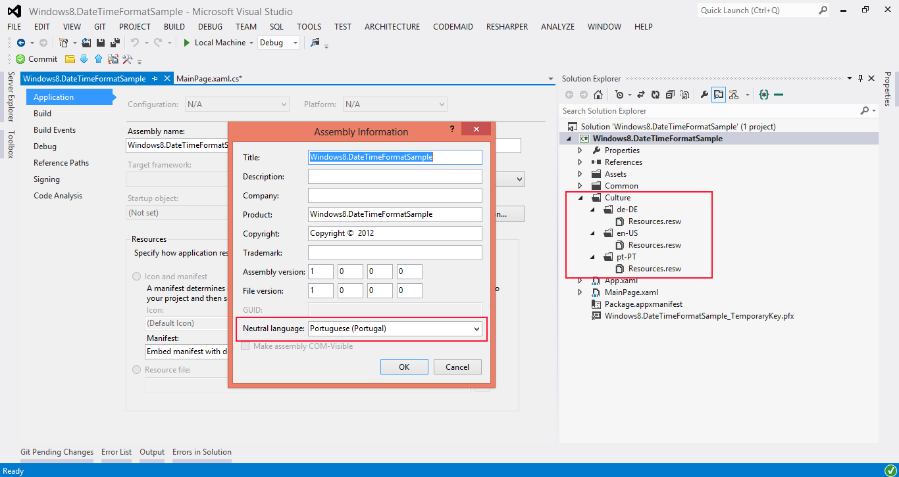

Displaying DateTime objects in a localized application
Introduction
This sample shows how to display DateTime object in application that was localized, exponsing four ways to convert a datatime object to a string value.
Building the Sample
You only need Visual Studio 2012 and Windows 8, both the RTM version.
Description
Before start, let's prepare the application for localization:
1. Define the Neutral Language in Assembly Information
2. Create a Culture folder in solution and inside create one folder for each language the application supports, at the end add the Resources.resw file for each language folder.
. 
If you have doubts for this, you can see the following topic:
Creating resource files in Creating and retrieving resources in Windows Store apps
Note: To change the languages, move the language to the top like in the following image:
.png)
Now, let's create string values for display the datetime objects.
1. Using ToString() and the following formats:
"d", "D", "f", "F", "g", "G", "m", "r", "s", "t", "T", "u", "U", "y",
"dddd, MMMM dd yyyy", "ddd, MMM d \"'\"yy", "dddd, MMMM dd", "M/yy", "dd-MM-yy"
var format ="d"; var stringValue = currentDateTime.ToString(format);
var format ="d";
var stringValue = currentDateTime.ToString(format);
2. Using ToString(), DateTimeFormatInfo.InvariantInfo and the following formats:
"d", "D", "f", "F", "g", "G", "m", "r", "s", "t", "T", "u", "U", "y",
"dddd, MMMM dd yyyy", "ddd, MMM d \"'\"yy", "dddd, MMMM dd", "M/yy", "dd-MM-yy"
The result for the "G" format is:
* G Format Specifier de-DE Culture 12.10.2012 22:04:32
* G Format Specifier en-US Culture 12/10/2012 10:04:32 PM
* G Format Specifier pt-PT Culture 12/10/2008 22:04:32
var format ="d"; var stringValue = currentDateTime.ToString(format, DateTimeFormatInfo.InvariantInfo);
var format ="d";
var stringValue = currentDateTime.ToString(format, DateTimeFormatInfo.InvariantInfo);
* G Format Specifier 10/12/2000 22:32:32
var dateTimeUsingFullDateTimePattern= currentDateTime.ToString(dateTimeFormatter.FullDateTimePattern) var dateTimeUsingLongDatePattern= currentDateTime.ToString(dateTimeFormatter.LongDatePattern); var dateTimeUsingLongTimePattern= currentDateTime.ToString(dateTimeFormatter.LongTimePattern) var dataTimeUsingMonthDayPatternValue= currentDateTime.ToString(dateTimeFormatter.MonthDayPattern) var dateTimeUsingShortDatePattern= currentDateTime.ToString(dateTimeFormatter.ShortDatePattern)) var dateTimeUsingShortTimePattern=currentDateTime.ToString(dateTimeFormatter.ShortTimePattern)
var dateTimeUsingFullDateTimePattern= currentDateTime.ToString(dateTimeFormatter.FullDateTimePattern) var dateTimeUsingLongDatePattern= currentDateTime.ToString(dateTimeFormatter.LongDatePattern); var dateTimeUsingLongTimePattern= currentDateTime.ToString(dateTimeFormatter.LongTimePattern) var dataTimeUsingMonthDayPatternValue= currentDateTime.ToString(dateTimeFormatter.MonthDayPattern) var dateTimeUsingShortDatePattern= currentDateTime.ToString(dateTimeFormatter.ShortDatePattern)) var dateTimeUsingShortTimePattern=currentDateTime.ToString(dateTimeFormatter.ShortTimePattern)
* ShortTimePattern Format Specifier de-DE Culture 22:04
* ShortTimePattern Format Specifier en-US Culture 10:04:32 PM
* ShortTimePattern Format Specifier pt-PT Culture 22:04
4. Using DateTimeFormatterThe result for "month day dayofweek year" isC#Edit|Removecsharpvar dateTimeFormatter1 = new DateTimeFormatter("month day dayofweek year"); var dateTime1 = dateTimeFormatter.Format(currentDateTime) var dateTimeFormatter2 =new DateTimeFormatter(YearFormat.Default, MonthFormat.Default, DayFormat.Default, DayOfWeekFormat.Default, HourFormat.None, MinuteFormat.None, SecondFormat.None, languages) var dateTime2 = dateTimeFormatter2.Format(currentDateTime);var dateTimeFormatter1 = new DateTimeFormatter("month day dayofweek year"); var dateTime1 = dateTimeFormatter.Format(currentDateTime) var dateTimeFormatter2 =new DateTimeFormatter(YearFormat.Default, MonthFormat.Default, DayFormat.Default, DayOfWeekFormat.Default, HourFormat.None, MinuteFormat.None, SecondFormat.None, languages) var dateTime2 = dateTimeFormatter2.Format(currentDateTime);
* "month day dayofweek year" Format Specifier de-DE Culture Freitag, 12. Oktober 2011
* "month day dayofweek year" Format Specifier en-US Culture Friday, October 12, 2011Note:
* "month day dayofweek year" Format Specifier pt-PT Culture sexta-feira, 12 de Outubro de 2012The DateTimeFormatter has more constructors.Related Samples
Application resources and localization sample
Localization for Images and Assets
Related Topics
Windows.Globalization.DateTimeFormatting
CultureInfo
InvariantCulture
DateTimeFormat
Build the sample
- Start Visual Studio Express 2012 for Windows 8 and select File > Open > Project/Solution.
- Go to the directory in which you unzipped the sample. Go to the directory named for the sample, and double-click the Visual Studio Express 2012 for Windows 8 Solution (.sln) file.
- Press F7 or use Build > Build Solution to build the sample.
Run the sample
To debug the app and then run it, press F5 or use Debug > Start Debugging. To run the app without debugging, press Ctrl+F5 or use Debug > Start Without Debugging.